Несебър
Нелошо място, което се опитва да запази културния си облик макар и на висока цена...
- 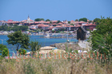
Вятърна мелница - 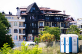
Оригинален дизайн на хотел - 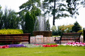
Фонтан - 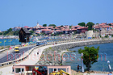
Връзката - 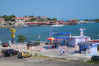
Яхтеното пристанище - 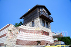
Антична къща - 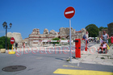
Пешеходен - 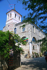
Черква - 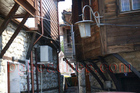
Архитектура - 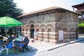
Музей - 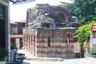
Останки - 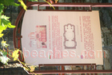
Свети архангели Михаил и Гавраил - 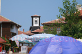
Часовник - 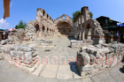
Света София - 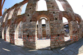
Още от Света София - 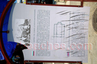
Табела за Света София - 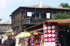
Антики - 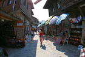
Още магазини - 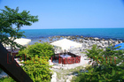
Романтичен ресторант - 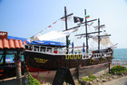
Пиратски кораб - 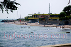
Плаж - 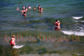
Във водата - 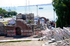
Още останки - 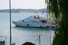
Модерна яхта - 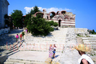
Стълби - 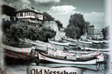
Стария Несебър - 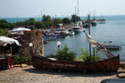
Капитанска среща - 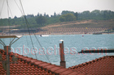
Плажа на новия град - 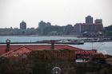
Хотели в новия град - 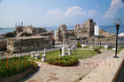
Градина - 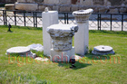
Още антики - 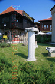
Добре поддържан - 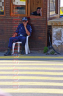
Полиция - 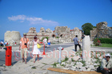
Горещина - 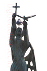
Статуя - 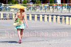
Стилна - 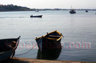
Лодки